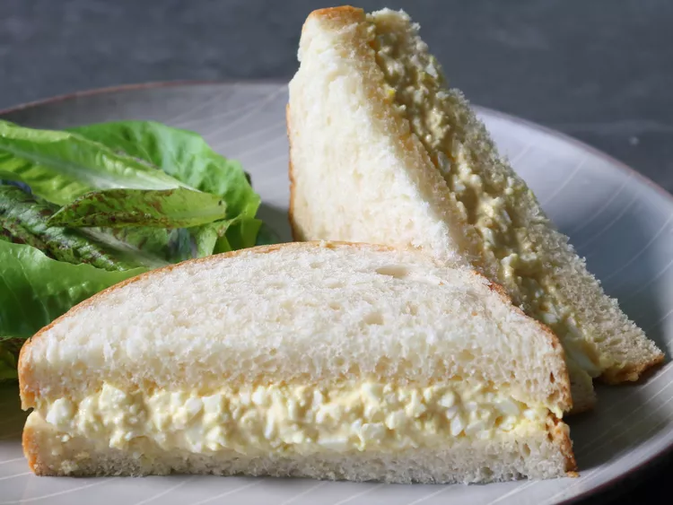

Japanese Egg Salad Sandwich

Description
I've always gone out of my way to avoid egg salad, and had no plans to change
that behavior this late in life, but after seeing people go nuts over this
sandwich on social media, I decided to give it a go.
Surprisingly, I didn't hate it. In fact, I kind of liked it, and have identified the
two main reasons why. It comes served on soft, buttery, slightly sweet Japanese milk bread,
which is the perfect delivery system. Plus, the salad is bound together with a super savory
mayonnaise that, as my old buddy Guy Fieri might say, would taste great on a flip flop.
The most popular brand of this mayo is called Kewpie, which is pretty easy to find.
But just in case, I show a fairly close version using commonly found pantry ingredients.
Mine doesn't include MSG, which is one reason people line up for the stuff, but it's still very
savory. Between that and the homemade milk bread, I almost forgot I was eating egg salad. So,
whether you love egg salad and have always wanted to try this, or you're not a huge fan
(but willing to taste the world's most famous version), I hope you give this a try soon. Enjoy!
Ingredients
- 4 large eggs
For the Kewpie-Style Mayonnaise:
- ½ cup mayonnaise
- ¼ teaspoon kosher salt
- ¾ teaspoon white sugar
- 1 teaspoon Dijon mustard
- 3 dashes hot sauce, or to taste
- 1 teaspoon freshly squeezed lemon juice
- 2 teaspoons rice vinegar
For the Sando:
- ½ teaspoon kosher salt, or to taste
- ¼ teaspoon white sugar
- 1 pinch cayenne pepper
- 1 tablespoon heavy cream
- 4 slices soft white bread
- 1 tablespoon unsalted butter, softened
Steps
- Place eggs in the bottom of a saucepan. Add 1/4 inch of water.
Heat over medium-high heat and bring to a boil. Cover and steam
for 11 minutes. Turn off the heat and drain water carefully; pour
cold water over and let cool.
- Mix mayonnaise, salt, sugar, mustard, hot sauce, lemon juice, and
vinegar for Kewpie-style mayonnaise together. Cover with plastic
wrap and refrigerate until needed.
- Peel eggs. Mash in a shallow bowl with the side and back of a fork
until desired texture is reached. Add salt, sugar, cayenne, heavy
cream, and 3 tablespoons Kewpie-style mayonnaise. Stir to
combine. Wrap and refrigerate until well chilled, at least 1
hour. Taste and adjust seasonings.
- Butter bread slices and use 1/2 of the egg salad on each sandwich.
Cut crusts off before serving if you're fancy.
Home